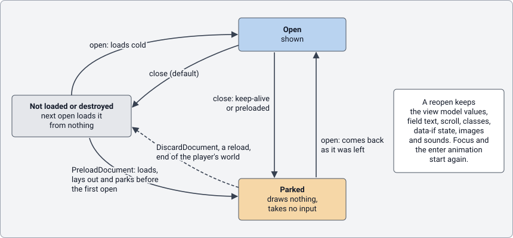

Keep-alive and preload¶
A document is destroyed when it closes, and the next open loads it again from nothing. Two things change
that: a keep-alive document is parked when it closes and comes back as you left it, and a preloaded document is loaded before
its first open, so that open shows it at once. The KeepAlive sample has a menu with a button for each, and two screens
it opens. Run it by choosing KeepAlive in the samples list in the map L_ArcRmlSamples (Samples).

Park and reopen¶
<meta name="keep-alive" content="true"/>
With that <meta> in its <head> (Documents), closing the screen parks it instead of
destroying it. Opening it again brings back what the player left:
- The view model with its values: the count
Keptshows is still there. The view model is new only after a discard or a reload. - The text in a field, the scroll position of a list, the classes and the
data-ifstate. - Loaded images and sounds.
What starts again is focus and the enter animation: focus goes to the autofocus element as on a first open, and the
--sound-focus of the element that takes focus plays (Sounds). on-close runs on every
park (View models).
A parked document is not open. It draws nothing, takes no input and does not hide the documents below it.
- A tab cannot declare
keep-alive; the<meta>of its frame decides (Frames and tabs). - In the editor, a reopen loads the document again when its files changed.
- In the editor, a reload of documents, style sheets or fonts destroys every parked document.
Preload¶
<button id="ka-preload" class="ka-button" autofocus="" data-event-click="call('', 'Preload')">Preload</button>
void UArcRmlSamplesKeepAliveMenuViewModel::Preload(UObject* WorldContextObject)
{
if (UArcRmlViewportSubsystem* Viewport = ArcRmlSamplesKeepAlive::GetViewport(WorldContextObject))
{
Viewport->PreloadDocument(ArcRmlSamplesKeepAlive::Preloaded);
}
}
This is an excerpt of the sample: GetViewport returns the local player's UArcRmlViewportSubsystem for the player controller, and Preloaded is the sample's FArcRmlDocumentRef for Preloaded.rml.
PreloadDocument (C++ and Blueprint) loads the document, lays it out and parks it without showing it, and remembers that its path is preloaded. Preloaded.rml has no
keep-alive <meta>, yet the next open shows it at once.
- A preloaded document parks on every close, as a
keep-aliveone does, so its second open is as fast as its first. - The preload starts once the local player controller exists, and its pawn when the game mode has a default pawn. It does not start in a frame that opened a document. One preload runs at a time, the rest wait in the queue.
- A document that is already open or parked is not loaded again; asking twice for one path does nothing.
- An open that arrives while the preload still loads takes it over and shows it as soon as it is loaded. An open before the preload started opens the document like any other and drops the queued preload.
- Opened before the first
PreloadDocument, a document opens and closes like any screen.
Discard¶
void UArcRmlSamplesKeepAliveMenuViewModel::DiscardBoth(UObject* WorldContextObject)
{
if (UArcRmlViewportSubsystem* Viewport = ArcRmlSamplesKeepAlive::GetViewport(WorldContextObject))
{
Viewport->DiscardDocument(ArcRmlSamplesKeepAlive::Kept);
Viewport->DiscardDocument(ArcRmlSamplesKeepAlive::Preloaded);
}
}
Kept is the sample's FArcRmlDocumentRef for Kept.rml; GetViewport and Preloaded are as above.
DiscardDocument(Document) (C++ only) and the console command ArcRml.Discard <Path> destroy the parked view, so the
next open loads the document again: Kept then starts at count 0 with an empty field. A parked document stays until a
discard, a reload or the end of the player's world; there is no eviction.
- A discard also forgets that the path is preloaded. A preload that still loads is dropped, and an open screen that parks only because it was preloaded is destroyed when it closes.
- A kept screen that is still closing when the discard comes is destroyed at once instead of parking.
- An open screen that is not preloaded, and a document that was never loaded, is left alone; the log says so.
What you should see¶
Run the sample (Samples). The menu is titled "Keep alive" and has four buttons.
- Open kept opens the screen "Kept": a button Add one, the text "Count: 0", a text field and a list "Row 1" to "Row 10".
- Add one changes the text to "Count: 1". Type something in the field and scroll the list.
- Back parks the screen and shows the menu again. Open kept again shows "Count: 1", your text and the scroll position.
- Preload shows nothing new on screen; the log has the
preloadedline (What the log says). Open preloaded then shows the screen "Preloaded" at once; its button reads Back closes it. - Discard both also shows nothing new. Open kept now starts at "Count: 0" with an empty field.
In Project Settings¶
Project Settings > Game > ArcRmlUI > Preload > Documents To Preload lists documents to preload with no code, for every
local player from the start of the game (+DocumentsToPreload=(Path="/Game/UI/Rml/Menus/Inventory.rml") in
Config/DefaultGame.ini under [/Script/ArcRmlUI.ArcRmlUISettings]). Each entry is preloaded as if PreloadDocument was
called for it. With Package Everything off, the listed documents also ship, with their frames and what they open.
In a Game Feature¶
The companion plugin ArcRmlUIGameFeatures, which does not ship with this plugin, has the Game Feature action Preload RML Documents
(UArcRmlGameFeatureAction_PreloadDocuments). Its Documents list is preloaded for every local player while the Game
Feature is active, and discarded when it deactivates.
What the log says¶
The lines are in the log category LogArcRmlUI, start with ArcRmlUI: and have Log verbosity, except the failure, a
warning. These are the ones to search for:
| Line | Meaning |
|---|---|
preload '<path>' queued, <n> pending |
PreloadDocument queued the path. |
preloaded '<path>' view <id> ...; it is parked for its first open |
The document is loaded and parked. |
preload of '<path>' view <id> failed; the view is destroyed (warning) |
The preload failed; the next open loads the document cold. |
open '<path>' requested before its preload was sent; it opens cold |
An open came first and dropped the queued preload. |
discarded the parked|preloading '<path>' view <id>: <reason> |
A parked or still preloading view was destroyed. The reason names the cause, for example discard requested, documents, style sheets or fonts reloaded, its compiled file is stale or its world is cleaned up. |
discard '<path>' ignored, it is not parked |
Nothing was destroyed: the path is not parked and not a kept screen that is closing. |